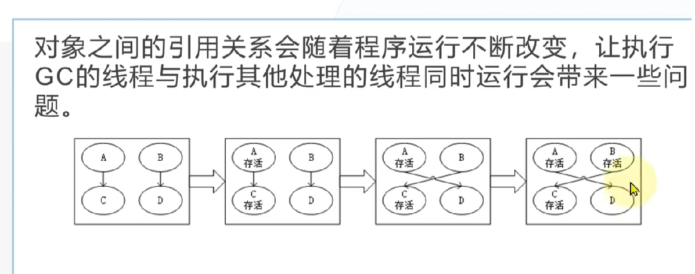

GC(Grid Communication)如其名，就是垃圾收集，当然这里仅就内存而言。而为什么要GC就不多赘述了
GarbageCollector（垃圾收集器，在不至于混淆的情况下也成为GC）以应用程序的root为基础，遍历应用程序在Heap上动态分配的所有对象，
通过识别它们是否被引用来确定哪些对象是已经死亡的、哪些仍需要被使用。
已经不再被应用程序的root或者别的对象所引用的对象就是已经死亡的对象，即所谓的垃圾，需要被回收。这就是GC工作的原理。
为了实现这个原理，GC有多种算法。比较常见的算法有Reference
Counting，Mark Sweep，Copy Collection等等。目前主流的虚拟系统.NET CLR，JavaVM和Rotor都是采用的Mark
Sweep算法。
要回答这个问题首先要了解栈空间和堆空间
栈的定义:
栈（stack）又名堆栈，堆栈是一个特定的存储区或寄存器，它的一端是固定的，另一端是浮动的
。对这个存储区存入的数据，是一种特殊的数据结构。所有的数据存入或取出，只能在浮动的一端（称栈顶）进行，
严格按照“先进后出”的原则存取，位于其中间的元素，必须在其栈上部（后进栈者）诸元素逐个移出后才能取出。
在内存储器（随机存储器）中开辟一个区域作为堆栈，叫软件堆栈；用寄存器构成的堆栈，叫硬件堆栈。
栈（操作系统）：由操作系统自动分配释放
，存放函数的参数值，局部变量的值等。其操作方式类似于数据结构中的栈。
堆（操作系统）： 一般由程序员分配释放，若程序员不释放，程序结束时可能由OS（操作系统）回收，分配方式倒是类似于链表。
所以GC是处理堆空间的回收(代替了程序员自己来回收的过程)
什么时候堆空间里的内容才是垃圾呢?
对于引用类型来说,用new来申请一块空间用来保存值，然后返回空间的开始地址。如果不再有指针指向引用类型则会准备被回收。所以GC就是找出堆空间中不再被引用的程序。
其实这个在第一点已经稍微回答了,GC中常用的算法就是Mark Sweep即标记并清除
阶段1: Mark-Sweep 标记清除阶段，先假设heap(堆)中所有对象都可以回收，然后找出不能回收的对象，给这些对象打上标记，最后heap中没有打标记的对象都是可以被回收的；主要处理步骤：将线程挂起→确定roots→创建reachable objects graph(可达对象图,也就根据引用关系形成一张图,在图上的所有节点都可以根据引用关系,从roots出发可以达到/遍历到)→对象回收→heap压缩→指针修复。 可以这样理解roots：heap中对象的引用关系错综复杂（交叉引用、循环引用），形成复杂的graph，roots是CLR在heap之外可以找到的各种入口点。
GC搜索roots的地方包括全局对象、静态变量、局部对象、函数调用参数、当前CPU寄存器中的对象指针（还有finalization queue）等。主要可以归为2种类型：已经初始化了的静态变量、线程仍在使用的对象（stack+CPU register） 。
指针修复是因为compact过程移动了heap对象，对象地址发生变化，需要修复所有引用指针，包括stack、CPU register中的指针以及heap中其他对象的引用指针。
分代算法的出现主要考虑到以下几个问题:
基于此,按照寿命长短,堆被分为三个代分别是Generation 0，Generation 1， Generation 2(莫名想到死月妖花)。而不同堆的分配根据主要是对象寿命(无法预测,只是估计). 正因为被分成多个堆了而且每个堆可回收的垃圾的量不一样,使得GC可以只回收某个堆(第0代)的来提高效率(其他的代的回收会在不同情况下进行)
当条件允许时，垃圾收集发生在特定的世代。收集一代意味着收集该一代及其所有年轻一代的对象。第 2 代垃圾回收也称为完整垃圾回收，因为它回收所有代中的对象（即托管堆中的所有对象）。 当垃圾收集器检测到某一代存活率较高时，会增加该代的分配阈值。 下一个集合获得大量回收内存。 CLR 不断平衡两个优先级：不让应用程序的工作集因延迟垃圾收集而变得太大，以及不让垃圾收集运行得太频繁。
先设想这么一个场景,如果GC在回收垃圾时,如果直接调用垃圾的析构函数,由于析构函数的执行时间非常长,加上GC本身是占用主线程,会导致该次GC的时间非常长 (也就是本来200帧的游戏是不是掉到20帧率(GC太久不更新帧)又回到到200帧),为此.net采用了两个队列Finalization Queue和Freachable Queue(Finalizers 终结器,可以理解为析构函数),这两个队列都只存储指向对象的指针
Finalization Queue:包含着所有存活的可终结对象(有不为空的析构函数的对象)
Freachable Queue:包含着所有已经可以终结的对象
在GC被启动以后，经过Mark阶段分辨出哪些是垃圾。再在垃圾中搜索，如果发现垃圾中有被Finalization
Queue中的指针所指向的对象，则将这个对象从垃圾中分离出来(不直接杀死)，并将指向它的指针
移动到Freachable
Queue中。这个过程被称为是对象的复生（Resurrection），本来死去的对象就这样被救活了。为什么要救活它呢？因为这个对象的Finalize方法还没有被执行，所以不能让它死去。
(要注意,这里的复生不是指真的复活,而是要先执行析构函数再杀死)
而Freachable Queue平常不工作,但是一旦有指针移动到该队列时,他就开始处理这些指针指向的对象的析构.(由GC会指示 finalizer
thread 来运行这些 finalizer 。)Finalizer thread 是另一种由.NET运行时创建的线程，它会一个接一个的移除
fReachable queue 中的对象，并调用其 finalizer 。 finalizer thread 运行时可能在
finalizer的代码中分配对象，因此，在垃圾处理完成后，用户线程开始执行的时候， finalizer thread 才会开始执行。
但是这样带来了一个问题,就是Finalizer thread 不一定在下一次GC中完成所有对象的析构,而此时在Finalizer
thread中的对象已经是不可达了(也不在Finalization Queue中)会在GC中回收.为解决这个问题我们可以将Freachable Queue
在标记阶段视作为roots,这样对象就是可达的了(也就不会被GC回收).但是这样又又又带来了个问题,也就是升代问题,原本G0(第0代)应该在G1回收的时候回收掉(因为第一次没有回收成功,所以升代了),
但是如果在G1回收的时候finalizer
thread还没有处理完析构则又升代了(G2),而G2回收时间间隔很久这就会导致本该回收掉的垃圾要过了很久(在回收G2)的时候才会回收.
使用如下方式可以避免中间代危机，可以精确的清理内存。
GC.Collect();//该方法会直接处理2代以及前面几代
GC.WaitForPendingFinalizers();
GC.Collect();
这种方式首先进行 full-blocking GC 发现所有的 Freachable objects，然后让当前线程等待 Freachable queue
清空，让这些对象不可达，最后再次进行 full-blocking GC，
回收 Freachable objects 的内存。很明显，如果其他线程在这个线程调用 GC.WaitForPendingFinalizers的时候分配了可终结对象，
那么这些可终结对象会升至G1(第一次没有回收)，再次调用 GC.Collect(第二次也没有回收) 时会升至G2,Freachable
queue可能添加新的项。这使得你无法在不暂停其他线程的情况下清空所有的内存垃圾。
托管代码：CLR(公共语言运行库）可以识别的代码（IL）称之为托管代码，由CLR处理并且提供GC服务
非托管代码：不能识别的，比如C++的代码，或者是C＃中用unsafe标记代码片段(可以使用指针）,文件句柄(文件I/O用到的),
GDI资源,数据库连接等等托管代码可以将值传递给非托管代码
非脱管代码由于无法确认其是否有使用引用类型，所以.NET规定，向非托管代码传值时必须创建固定类型的GC句柄，并在托管代码中保持这个句柄存活到非托管代码的调用结束。
创建了固定类型GC句柄的对象就称之为固定对象。
上面的升代问题其实已经介绍了其中一种GC为什么要挂起其他线程(STW stop the world).因为对象之间的引用关系会随着程序运行不断改变,如果GC在标记时其他线程改变了对象之间的引用就会造成无法回收的后果 在上图在GC标记完c后开始从b遍历,此时其他线程修改了ab的引用关系,从b遍历只能遍历到c而d就不可达了,所以d会被回收但是d却被a引用.所以需要STW.
其中1调用的是针对第一代的GC，会尝试回收短暂堆段的对象，使得短暂堆段有更多空间。当1执行完后仍然不够空间或者4会触发第二代的GC（完整GC）